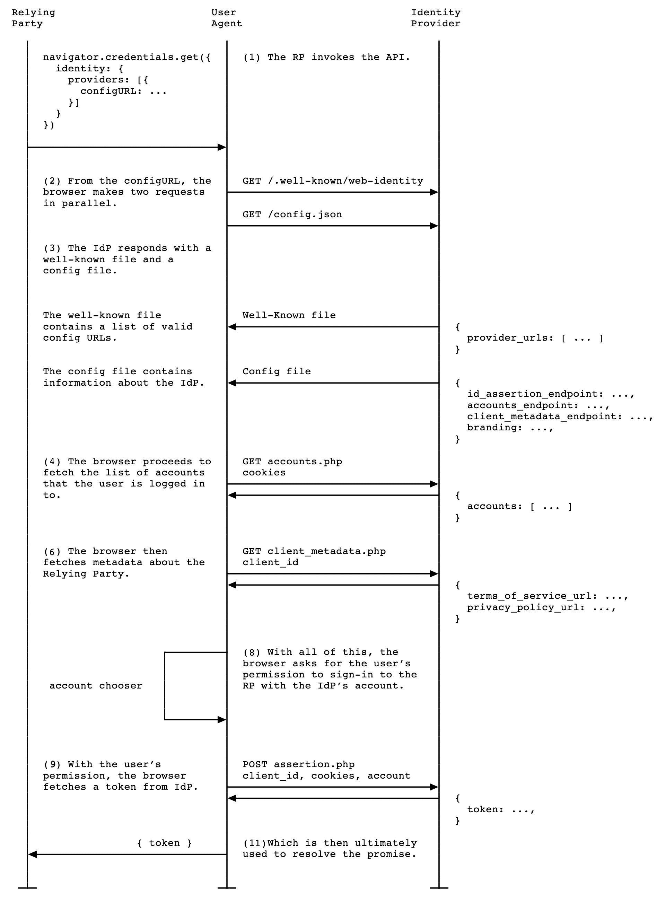

FedCMx0click
Sandbox reproduction and report for 0-click FedCM auto-opening webpage bug in X iOS app
Report and demo by Alex Greenland, Epi Security (epihq.com)
22 July 2026
There is currently a bug in the X iOS app which automatically opens FedCM login pages unprompted when a user clicks on a tweet.
This webpage is a demo to open a browser-native screen to log in with a federated identity provider, using the FedCM (Federated Credential Management) browser API.
This is a client-side demo page and it does not collect any user details or credentials. Do not log in or accept any prompts triggered by this demo.
A federated identity provider (IdP) can be a popular or well-known provider like Google, Okta, Microsoft Entra/AD, Microsoft Personal, Facebook, GitHub, or a service you and your team use every day.
But, a federated IdP can be created and controlled by a threat actor, to impersonate an existing identity provider, to phish and socially engineer users with no initial clicks.
Context and Technical Details
- Since X introduced the new link browser in October 2025, tweet links are preloaded in the background when a tweet is opened. This is not good security practice in general, for privacy and device security.
- When a user opens a post on X, it preloads any links. During the tweet link preload, the X browser context (based on WebKit) loads the third-party webpage containing FedCM, invokes the FedCM request to log in, which triggers the device-native browser login screen, which on iOS is like ASWebAuthenticationSession.
- The FedCM request login screen is shown in a modal Safari webview, obscuring the original post.
- FedCM is a new and developing web standard, aiming to provide device-native login screens for federated logins, augmenting and replacing OAuth and OpenID Connect. FedCM was created in the context of third-party cookies being blocked in browsers.
- FedCM is supported in Safari on iOS and macOS, Chrome desktop and Android, Edge, and Opera. Firefox does not current report browser support.
Threats
This bug in X creates critical security vulnerabilities, with no intentional user interaction, confirmation or prompts.
- 0-click phishing pages — "please log in to X again" / "sign in to Google to view this document"…
- 0-click file downloads
- 0-click client-side malware — using the FedCM webpage to load and execute content with HTML and JS
- 0-click server-delivered malware — using the FedCM request to respond with malware from a threat actor controlled server
- 0-click adult content
Minimal Reproducible Example
The configURL is specified and controlled by the threat actor.
We set the configURL as the Google FedCM demo site, fedcm-demo-idp.dev.
const run = async () => {
const identityCredential = await navigator.credentials.get({
mediation: "required",
identity: {
providers: [
{
configURL: "https://fedcm-demo-idp.dev/fedcm.json",
clientId: "*** [not needed for threat actor]",
params: {},
},
],
}
})
}
run()
FedCM flow

Source: MDNReferences
Google FedCM Demo
This demo uses the Google-official identity provider demo for FedCM at fedcm-demo-idp.dev
FedCM Relying Party Sign-in — MDN